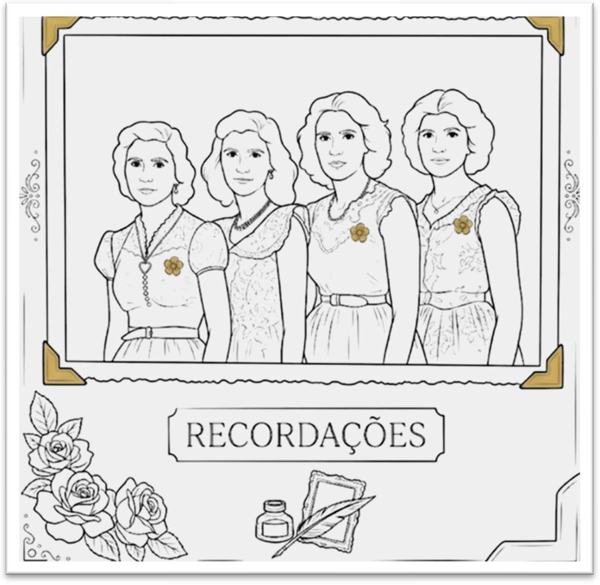
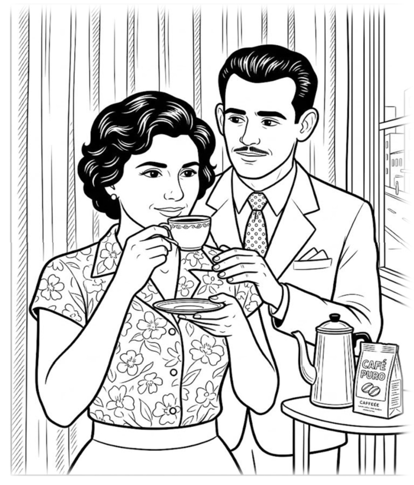

O Famoso Café com Alho Servido às Irmãs
A elegância e a beleza das irmãs Dossi sempre chamaram a atenção de todos. Vestidos de renda, cabelos no lugar, sorrisos compostos. As fotografias da época mostram moças comportadíssimas. As fotografias, felizmente, não contam tudo.

Porque, enquanto as irmãs recebiam os namorados na sala, havia uma Dossi na cozinha. E essa Dossi estava insatisfeita.
Era Zelinda quem ficava com os serviços da casa nos dias de visita. As irmãs, na sala, conversando, sorrindo, sendo cortejadas. Zelinda, na cozinha, lavando, servindo, passando café. Ela fez as contas e chegou a uma conclusão muito simples: aquilo era uma injustiça. E injustiça, para Zelinda, não se reclamava. Resolvia-se.

Naquela tarde, enquanto o café passava no coador, ela pegou o alho. Não foi um dente, por educação. Zelinda nunca fez nada pela metade. Socou no pilão, misturou no café e, para disfarçar, acrescentou mais açúcar. O que, convém dizer, não disfarçou nada.
Na sala, a cena era de novela das seis. Entre os pretendentes estava Lupércio, que namorava Palmira: terno passado, gravata no lugar, cabelo penteado, postura de quem veio pedir a moça em casamento, ainda que ninguém tivesse falado nisso. Um rapaz sério. Respeitador. Educadíssimo. Exatamente o tipo de pessoa que não pode, em hipótese nenhuma, cuspir um café na sala da namorada.
Zelinda entrou com a bandeja, o bule e o sorriso mais inocente que uma moça já usou. O cheiro chegou antes dela. Uma das irmãs franziu o nariz e olhou para a janela, certa de que vinha da casa do vizinho.
— Cafezinho fresquinho — anunciou Zelinda.
Serviu as irmãs. Serviu as visitas. Serviu Lupércio por último, com uma atenção toda especial. E voltou para a porta da cozinha, de onde se tinha a melhor vista da sala.
Todos levaram a xícara à boca ao mesmo tempo.
O que se viu foi uma coreografia. Uma irmã tossiu discretamente no lencinho. A outra parou a xícara no meio do caminho e ficou ali, congelada, como uma fotografia. Um dos pretendentes, mais rápido de raciocínio, encontrou na samambaia do canto uma excelente destinatária para o resto do café.
Lupércio, não. Lupércio era um cavalheiro. Deu o primeiro gole inteiro, como mandava a boa educação, e o rosto dele passou, em três segundos, por todos os estágios da alma humana: surpresa, dúvida, desespero e, por fim, uma resignação digna de santo. A testa franziu, os olhos se encheram d’água, as orelhas ficaram vermelhas. Engoliu como quem engole uma notícia ruim. Respirou fundo. Pousou a xícara no pires com todo o cuidado do mundo.
- Está… diferente — conseguiu dizer.
Da porta da cozinha, a voz de Zelinda veio doce como calda:
- É receita nova. Quer mais um pouquinho?
- Não, obrigado. Estou satisfeito. Fez uma pausa e completou, baixinho:
- Pelo resto da vida.
As irmãs, vermelhas de vergonha, viraram-se ao mesmo tempo para a porta da cozinha. Zelinda devolveu o olhar com a cara mais limpa do mundo, como quem pergunta: “Ué, não gostaram?” A visita terminou mais cedo naquele dia. A samambaia nunca mais foi a mesma.
O café com alho tornou-se uma das travessuras mais famosas da juventude das irmãs e é contado até hoje, sempre com as mesmas risadas. Afinal, há histórias que não precisam de grandes acontecimentos para se tornarem inesquecíveis. Basta uma ideia inesperada, alguém com coragem para colocá-la em prática e uma família que nunca deixe o caso morrer.
E há um detalhe que torna essa lembrança ainda mais bonita: Lupércio não desistiu. Casou-se com Palmira. Poucos noivos deram prova de amor tão grande: casar com a moça sabendo que, no pacote, vinha a cunhada.
Dizem que, até o fim, sempre que Zelinda lhe oferecia um café, ele aceitava. Mas perguntava antes o que tinha dentro.